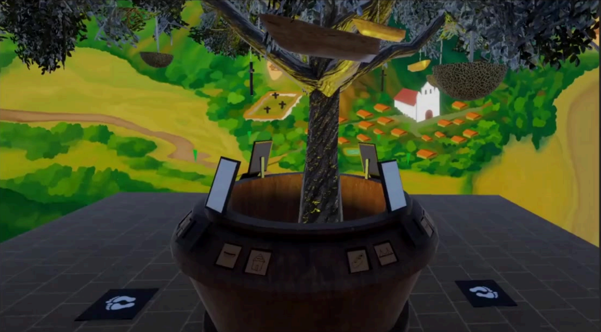

Museo Juan del Corral
Completado
VR
Proyecto Raíces — Museo Juan del Corral
Experiencia de realidad virtual desarrollada junto a mi equipo para el Museo Juan del Corral en Santa Fe de Antioquia. Integramos narrativa, interacción y patrimonio local alrededor de una instalación inmersiva con documentación visual del proyecto.
UnityVRMuseoPatrimonioStorytelling